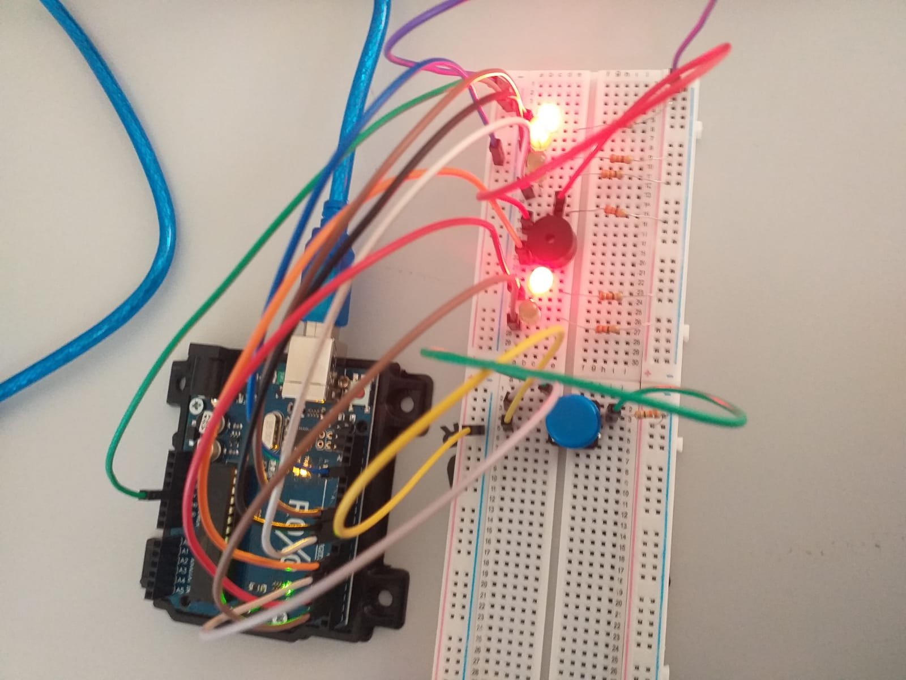
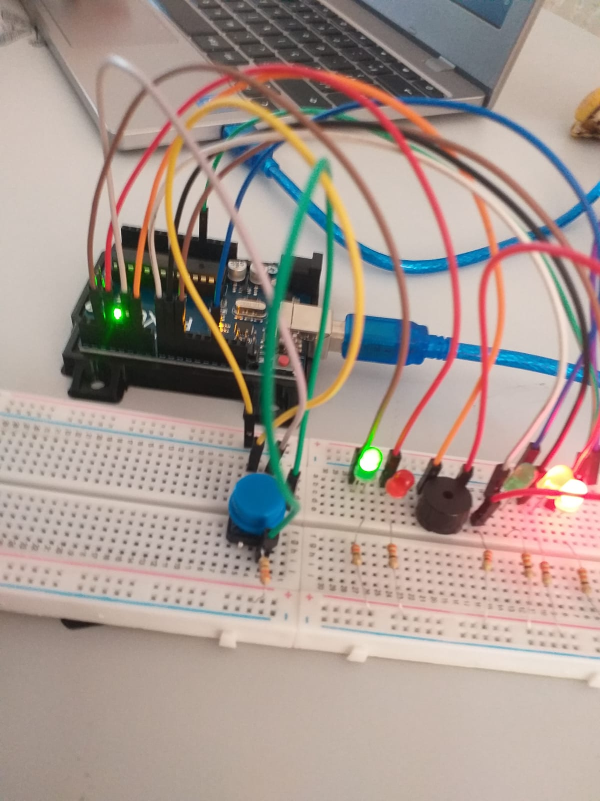
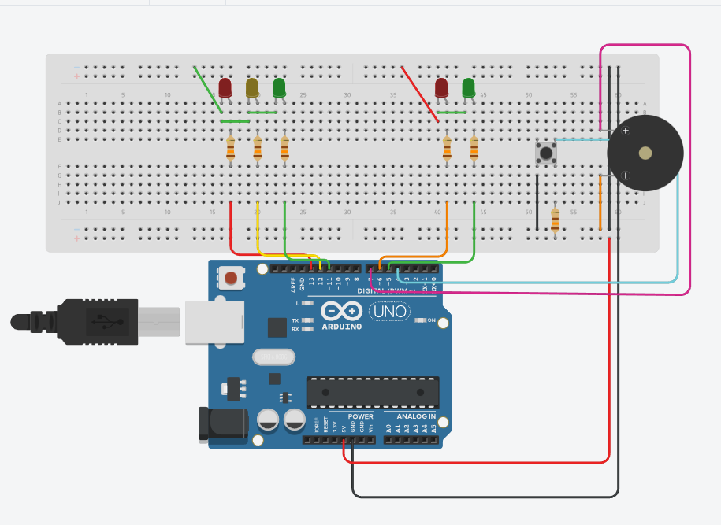
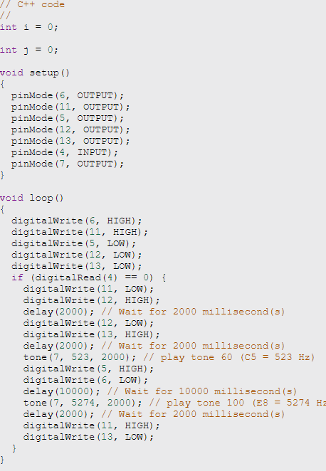

Introdução
Nossa prática realizada no dia 30/06/2023, foi uma montagem de um semáforo com um botão e buzzer, onde utilizamos os seguintes componentes:
- Arduino;
- Protoboard;
- 5 LEDs com 5 resistores de 330 Ω;
- 1 botão com 1 resistor de 1 kΩ;
- 1 Buzzer com 1 resistor de 330 Ω;
- Jumpers.
A Montagem


Logo abaixo segue os passos a serem tomados para se montar esse circuito:
- 0. Coloque o LED junto com o resistor correspondente (ambos 330 Ω) na protoboard. Certifique-se de conectar o LED ao ponto correto e conectar o negativo ao resistor e o resistor ao negativo/terra. No lado positivo do LED, conectamos um fio a uma porta digital no Arduino (posteriormente)
- 1. Se houver uma campainha, ligue-a depois que as luzes acenderem. Conecte um resistor de 300 Ω ao terminal negativo da campainha e conecte esse resistor ao terminal negativo, assim como o LED Agora coloque semáforos (vermelho e verde) para pedestres como você fez para semáforos de carros (coloque LEDs e resistores)
- 2. Agora coloque semáforos (vermelho e verde) para pedestres como você fez para semáforos de carros (coloque LEDs e resistores)
- 3. Agora, da esquerda para a direita: 3 LEDs (vermelho, amarelo e verde) para carros, uma campainha (opcional) e 2 LEDs (vermelho e verde) para pedestres. Atrás do semáforo de pedestres, coloque o botão e conecte um resistor de 1 kΩ a uma das pernas, que por sua vez se conecta ao terminal negativo. Conecte a outra perna diagonalmente ao terminal positivo (5V) da protoboard
- 4. Do LED vermelho positivo do semáforo de carros, conecte um fio à porta digital 13
- 5. No lado positivo do LED amarelo, conecte um fio à porta digital 12
- 6. No lado positivo do LED verde, conecte um fio à porta digital 11
- 7. Se estiver usando o buzzer, conecte o fio positivo da campainha à porta digital 7
- 8. Conecte um fio de uma perna do botão (entre os resistores) e conecte a outra extremidade à porta digital 4
- 9. Agora, para o LED vermelho pedestre, no lado positivo, conecte o fio à porta digital 6
- 10. Finalmente, para o LED verde, conecte um fio da perna lateral positiva à porta digital 5
- 11. Concluímos a vinculação de componentes. Agora você precisa conectar o lado positivo da protoboard à porta 5V do Arduino e o lado negativo da protoboard a uma das portas GND do Arduino (terra/negativo)
Agora vamos conectar os fios que controlam os semáforos às portas digitais do Arduino. Vamos juntar da esquerda para a direita:
Agora segue a foto da montagem no tinkercad e o bloco de texto que fazem a montagem funcionar:

